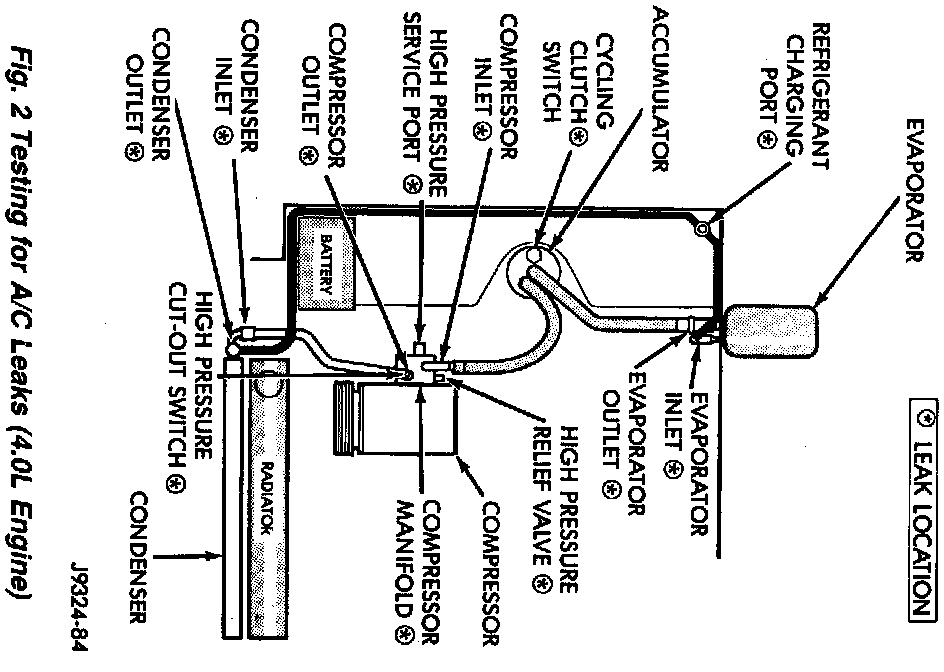

System Leak Checking
Fig.2 Testing For A/C Leaks (4.0L Engine):

REFRIGERANT LEAK TESTING
If the A/C system is not cooling properly, determine if the refrigerant system is fully charged with R-134a (refer to Refrigerant Charge Check). If the refrigerant system is empty or low in refrigerant charge, a leak at any line fitting or component seal is likely. To detect a leak in the refrigerant system, perform one of the following procedures:
SYSTEM EMPTY
1. Evacuate the A/C system.
2. Prepare a 0.6 lbs. (10 oz.) R-134a refrigerant charge to be injected into the system. Refer to Charging Refrigerant System for instructions.
3. Connect and dispense 0.6 lbs. (10 oz.) of refrigerant into the evacuated refrigerant system.
4. Position the vehicle in a wind free work area. This will aid in detecting small leaks.
5. With the engine not running, use an Electronic Leak Detector (R-134a refrigerant) and search for leaks. Fittings, lines, or components that appear to be oily usually will indicate a refrigerant leak. To inspect the evaporator core for leaks, it is possible to insert the leak detector probe into the recirculating air door opening. With the blower at low speed and the selector in FLOOR and RECIRC mode check for leaks at left and right heater outlets.
LOW LEVEL
1. Position the vehicle in a wind free work area. This will aid in detecting small leaks.
2. Bring the refrigerant system up to operating temperature and pressure. This is done by allowing the engine to run with the A/C on for 5 minutes.
3. With the engine not running, use an Electronic Leak Detector (R-134a refrigerant) and search for leaks. Fittings, lines, or components that appear to be oily usually will indicate a refrigerant leak. To inspect the evaporator core for leaks, it is possible to insert the leak detector probe into the recirculating air door opening. With the blower at low speed and the selector in FLOOR and RECIRC mode check for leaks at left and right heater outlets.